Engineering report · replication of NASA TM‑100991 · 14 September 2026
A component-level model of the General Electric T700‑GE‑700 turboshaft and its complete fuel control, rebuilt in Python from Ballin’s 1988 real-time simulation. This report covers what was built, how the source data was recovered from a scanned document, which modelling decisions depart from the report and what each costs, and how the result measures against every number the report prints.
Ballin’s problem was that a component-level thermodynamic engine model had to compute in under 10 milliseconds per frame on 1988 hardware while a pilot flew a helicopter around it. Most of the report is the record of how he made an implicit engine model run in real time and what that cost him. The replication reproduces both the model and the compromises — where the report is dated or arguably wrong, it is reproduced as written and the objection recorded rather than fixed.
The 5-state model Appendix B linearizes cannot be integrated at the report’s frame time. Our own Jacobian puts the fastest mode at 4881 /sec — a time constant of 0.205 ms — so explicit integration is stable only below about 0.41 ms. The report runs at 7 ms, seventeen times over that limit; it would diverge on the first frame. So Ballin makes the three pressures algebraic and solves them within the frame: an opened compressor mass-flow iteration that carries one flow across the frame boundary (Eq. 74), a Gauss–Seidel sweep for P3 and P41 (Eqs. 76, 78), and an independent solve for P45 (Eq. 80). What remains integrated is NG and NP, whose modes run 437–738 ms and 358–602 ms — comfortably stable.
That also decodes the report’s Conclusions, where omitting the high-speed inter-volume mass-flow dynamics “was found to be unnecessary”. Those dynamics are the two fast modes. They are far quicker than anything a pilot or rotor can feel, and carrying them would have cost a twentyfold smaller time step.
Before any comparison: what the engine does across the range the report declares it valid over. Nothing on this page is a fit to reference data.
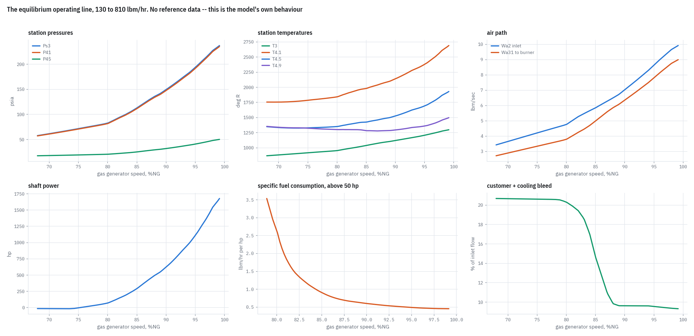
| Quantity | Range | |
|---|---|---|
| Gas generator speed | 68.0 – 99.2 %NG | the report claims validity to 100 %NG and no further |
| Fuel flow | 130 – 762 lbm/hr | the trim ladder's own span |
| Shaft power | -17 – 1,679 hp | crosses zero at 75.25 %NG — the free turbine absorbs below that |
| Compressor pressure ratio | 3.93 – 16.15 : 1 | Ps3 over ambient, sea-level standard day |
| Turbine inlet T4.1 | 1,755 – 2,691 °R | 2690 °R at the top of the range |
| Customer + cooling bleed | 9.32 – 20.68 % | falls as speed rises — the schedules close off above 85 %NG |
| Best SFC | 0.454 lbm/hr per hp | at 99.2 %NG |
Shaft power goes negative below 75.25 %NG. That is not a defect: at very low fuel the free turbine absorbs rather than delivers, and the report explicitly eliminates fuel control below flight-idle power. It is also why the SFC panel starts at 50 hp — plotting Wf/SHP through a sign change is meaningless.
Bleed falls from 20.7 % of inlet flow to 9.3 %.
Three bleed paths are modelled separately (Eqs. 12–17): seal pressurization
B1 against corrected speed, power-turbine balance B2 and
tip-leak plus turbine cooling B3, both against corrected inlet flow. The
step down between 80 and 88 %NG is the seal bleed schedule closing off — it reaches
exactly zero above 89 %NG and stays there, which the digitizer enforces rather than
leaving as read noise.
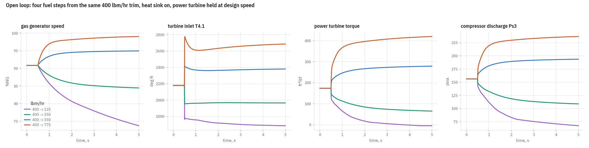
| Step, lbm/hr | NG start % | NG end % | T4.1 peak °R | T4.1 settled | overshoot |
|---|---|---|---|---|---|
| 400 → 125 | 90.86 | 73.73 | 2,180 | 1,686 | +493 |
| 400 → 250 | 90.86 | 84.46 | 2,180 | 1,965 | +214 |
| 400 → 550 | 90.86 | 95.00 | 2,414 | 2,381 | +33 |
| 400 → 775 | 90.86 | 99.09 | 2,779 | 2,688 | +91 |
Appendix C specifies the complete T700 fuel control and it contains no equations whatsoever. It is one constants table, twenty-two block diagrams and eight function plots. Every signal path in the implementation was traced off the page raster at 300–600 dpi, summing junction by summing junction, because a misread sign there inverts the control and still produces plausible numbers.
Two units, and the relationship between them is the thing to understand first.
The primary loop. Governs gas generator speed on a droop line, applies the idle, acceleration and deceleration cam limits, and meters fuel. It runs alone if the electrical trim is null. Figures C9–C22.
Governs power turbine speed and limits T4.5. Its
entire authority is one voltage, SPDG, which drives a torque motor that
trims the HMU’s droop line downward. Figures C1–C8.
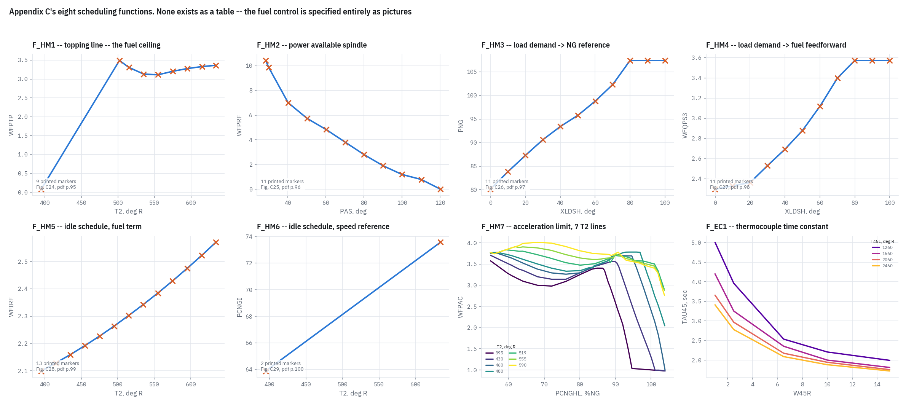
F_HM7
and F_EC1 are two-dimensional and were the hardest extractions in the
project — their curves converge and overprint, so they are traced column by column
and identified by rank rather than by reading a 10 px digit off a 1988
scan.| Function | Source | Extracted | What it does |
|---|---|---|---|
| F_HM1 | Fig. C24, pdf p.95 | 9 markers | Topping line. The fuel ceiling, a function of inlet temperature alone. |
| F_HM2 | Fig. C25, pdf p.96 | 11 markers | Power available spindle — the cockpit power lever, subtracted from the ceiling. |
| F_HM3 | Fig. C26, pdf p.97 | 11 markers | Collective pitch to the gas generator speed reference. |
| F_HM4 | Fig. C27, pdf p.98 | 11 markers | Collective pitch to the fuel feedforward. The load-demand anticipation. |
| F_HM5 | Fig. C28, pdf p.99 | 13 markers | Idle schedule, fuel term. Active only deep sub-idle. |
| F_HM6 | Fig. C29, pdf p.100 | 2 markers | Idle schedule, speed reference. Two printed markers define a straight line. |
| F_HM7 | Fig. C30, pdf p.101 | 7 lines | Acceleration limit. Two-dimensional: seven inlet-temperature lines. |
| F_EC1 | Fig. C23, pdf p.94 | 4 lines | Thermocouple time constant — itself a lookup, four T4.5 lines. |
The report’s only closed-loop figures need the Gen Hel UH‑60A blade-element helicopter simulation, which it consumes and does not contain — so there is no published closed-loop trace to overlay. The check that is available is a genuine cross-check rather than a restatement: the engine comes from the report’s body and Appendix A, the control from Appendix C’s block diagrams and digitized plots, and neither half knows the other exists. Close the loop, hold the printed shaft torque, set the speed reference, and the model must find Table B.1’s printed state with fuel flow as an output.
It does, to 0.34 % worst over fifteen numbers — NG, NP, Wf, Ps3 and shaft power at three trims.
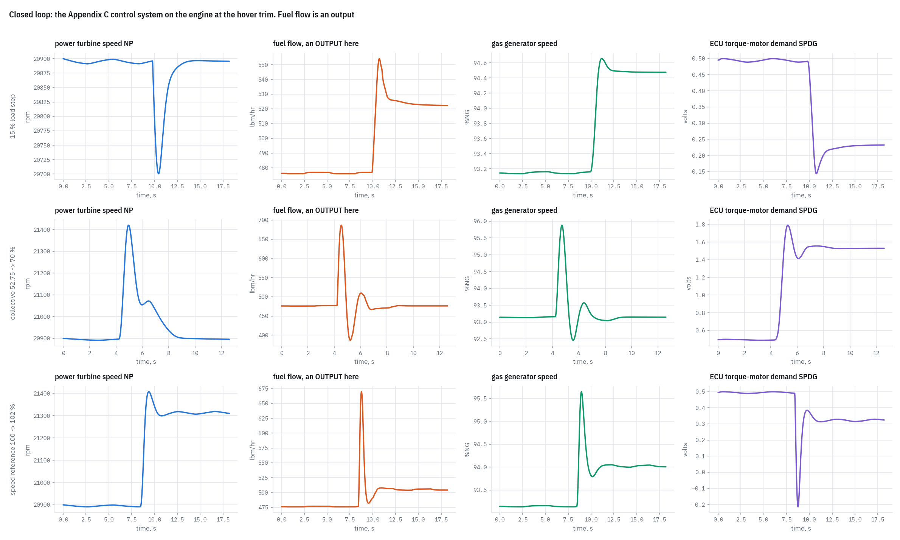
| Manoeuvre | NP range, rpm | NP settled | Wf range, lbm/hr | Wf settled | limit branch used |
|---|---|---|---|---|---|
| 15 % load step | 20,701 – 20,900 | 20,896 | 476 – 554 | 522 | droop |
| collective 52.75 -> 70 % | 20,891 – 21,420 | 20,896 | 387 – 686 | 476 | droop |
| speed reference 100 -> 102 % | 20,891 – 21,408 | 21,314 | 476 – 670 | 504 | droop |
The NG speed sensor carries a printed 0.05 %NG hysteresis band, and that band sustains a limit cycle: NP oscillates 7.5 to 16.7 rpm peak to peak at the three trims and does not decay. Every closed-loop number quoted here is therefore a mean over whole cycles, not a terminal sample — the terminal sample depends on where the run happens to stop and moves the headline figure by a factor of two and a half.
The report supplies its function tables only as printed plots. Nineteen figures carry model data — eleven engine functions and eight control schedules — and five more in the body carry the validation references. Recovering them is a measurement, and it is treated as one.
| Step | Method | The failure it prevents |
|---|---|---|
| Render | The Appendix C pages are single 300 dpi
1‑bit CCITT images. Every render above that is an upsample, so extraction works on
the embedded bitmap itself, pulled out with pdfimages. |
Inventing sub-pixel detail that was never in the scan. |
| Calibrate | Frame detection, then a tick lattice, then an axis polynomial fitted through the interior ticks. Never by eye. | Reading tick coordinates off a downscaled image cost ~25 px on the first figure — 0.3 in pressure ratio, enough to move every value and small enough to look entirely plausible in the CSV. |
| Rectify | Page skew and keystone are applied as a coordinate transform on the measured points. The pixels are never resampled. | Interpolation touching the data. It also means a residual bow in the
ink survives — which is how f6’s apparent slope was caught. |
| Extract | Single-curve figures: a generative model fitted to each printed glyph. Multi-curve figures: column-by-column tracing, with curves identified by rank because they never cross. | Blob detection is useless when markers sit on the joining line — the curve and all its crosses form one connected component. |
| Verify | An overlay image per figure, an independent visual marker count, and held-out checks — Figure A2’s markers recover the integers 1–20 to within 0.04. | Both failures above were invisible in the CSV and obvious in the overlay. This step is not optional. |
| Gate | Every digitizer reruns on demand and diffs against the committed file; the gate refuses to run on an interpreter without NumPy and a failed tool poisons the verdict. | A gate that cannot fail is not a gate — an earlier version
computed its verdict from git status alone and reported success when every
digitizer had crashed on import. |
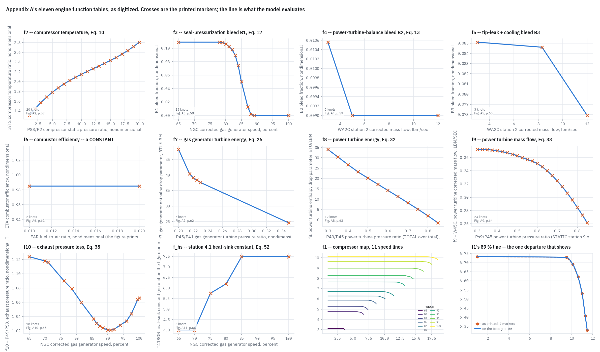
| Table | Source | Extracted | Printed abscissa | conditioning moved |
|---|---|---|---|---|
| f2 | Fig. A2, p.57 | 20 | PS3/P2 compressor static pressure ratio, non | 0 |
| f3 | Fig. A3, p.58 | 13 | NGC corrected gas generator speed, percent | 1.7e-04 |
| f4 | Fig. A4, p.59 | 3 | WA2C station 2 corrected mass flow, lbm/sec | 0 |
| f5 | Fig. A5, p.60 | 3 | WA2C station 2 corrected mass flow, lbm/sec | 0 |
| f6 | Fig. A6, p.61 | 2 | FAR fuel-to-air ratio, nondimensional (the f | 3.6e-05 |
| f7 | Fig. A7, p.62 | 6 | P45/P41 gas generator turbine pressure ratio | 0 |
| f8 | Fig. A8, p.63 | 12 | P49/P45 power turbine pressure ratio (TOTAL | 0 |
| f9 | Fig. A9, p.64 | 23 | Ps9/P45 power turbine pressure ratio (STATIC | 5.1e-05 |
| f10 | Fig. A10, p.65 | 18 | NGC corrected gas generator speed, percent | 0 |
| f_hs | Fig. A11, p.66 | 6 | NGC corrected gas generator speed, percent | 0 |
| f1 | Fig. A1, p.56 | 11 lines × 56 | 11 speed lines, beta grid | — |
A digitized table carries read noise, and some of these functions have physics that must hold exactly rather than approximately — a bleed fraction that reaches zero must be zero, a monotone ratio must not wobble. Conditioning enforces that on load. The last column is how far it moved any value, and it is bounded: if it ever exceeds 10−3 the digitization is wrong and the fix belongs at the figure, not in the loader. The CSVs are never edited — they still carry the ink as measured, so the chain back to the page is unbroken.
Figures 9 and 10 each contain one panel whose true value is printed: the fuel flow is the input, and both its levels are stated in the caption. Digitizing a panel whose answer is known measures the read error of those figures directly. It comes out as a fixed fraction of each panel’s span, not of the value — a pixel offset. The test of that model is a prediction: the two figures read the same 400 lbm/hr trim on axes of different height, and calibrating only on the fuel panels predicts +0.340 %NG on the speed panel against a measured +0.340. A percent-of-value model cannot produce that. Converted through each panel’s own span, the floor runs from 0.21 %NG on speed to 2.9 % on torque — which matters, because most headline transient agreements are quoted on speed, where the floor is nine times tighter than a single figure for the page would suggest.
The governing rule is replication, not improvement: where the report is dated, simplified or arguably wrong, reproduce it as written and record the objection. A handful of places nonetheless required a decision, either because the report is silent or because reproducing it literally produces something demonstrably wrong. Every one is listed here with what it costs, because a departure nobody can measure is a departure that will be undone by accident.
| Decision | What the report says | What we do, and what it costs |
|---|---|---|
| Station 4.1 heat sink Eqs. 48–53 | Prints both configurations and says which figures use which. Eqs. 48–49 are the metal energy balance; Eq. 50 is the lead–lag they collapse into. | Implemented as a switch, so the engine runs in either configuration Ballin published. Built on the printed Eqs. 48–49 and not on Eq. 50 — the collapse is only valid for constant coefficients, and the difference is visible: the Figure 9 T4.1 overshoot went 3.41× Ballin’s to 1.67× when the heat sink landed as Eq. 50, and to 0.87× when it was rebuilt on Eqs. 48–49. |
| The two heat-sink time constants τ₁, τ₂ in Eq. 63 | Not printed anywhere, and trim-dependent by definition. | Recovered from Appendix B’s own matrices, which determine their ratio (0.6845 / 0.6571 / 0.6270) even though neither survives its own print precision alone. Ours runs 7.3 % low uniformly — and that same ratio shows up in three independent blocks of the linear model, which is what says it is the time constants and not the structure. |
| Opened compressor iteration Eq. 74 | Reads two ways. The printed equation lags only the bleed; the prose says the combustor inlet flow is the flow leaving the compressor in the previous interval. | Both implemented and selectable; the prose reading ships. The distinction is below the tolerance the report itself works to — both converge to the same limit and differ by at most 0.11 %NG over a whole 400 → 775 step at the report’s own frame, settling to 0.0002 %. |
| Power turbine pressure solve Eq. 80 | “Because it is a nonlinear function of its own value, iterative techniques must be used.” | The printed fixed-point iteration does not converge where the mass-flow table’s elasticity is below −1, which is most of a chop. It is now solved exactly: substituting u = Ps9/P45 turns it into a piecewise-linear function against a line through the origin, strictly decreasing, so the root is unique and one divide away. Satisfies Eq. 80 to better than 10−12; the bisection it replaced sat within 3×10−6. |
| Compressor map interpolation f1, Figure A1 | Seven markers per speed line and no interpolation scheme stated anywhere. | A departure. Interpolated at constant beta — the fraction of each speed line’s own pressure-ratio span — rather than at constant abscissa. It removes a manufactured extrapolation entirely (389 frames of the chop read a speed line up to 45 % past its last knot; zero do now) and halves the worst Table 1 speed mode, 22.6 → 7.6 %. It costs 0.2018 → 0.2439 % on Table B.1’s rms. Taken because a scheme that invents extrapolation is wrong whatever it scores. |
| Combustor efficiency f6, Figure A6 | A curve with a visible slope, and no numeric table. | A departure. Loaded as a constant. The thirteen digitized glyphs are consistent with a horizontal line to within 3.65×10−5 at each endpoint — well inside the ink width — and the page’s four frame edges sit at four different angles, so a printed horizontal line does not come back horizontal. The slope was the paper. |
| Limited integrators Figs. C3, C7, C10 | All three draw an unlimited 1/s followed by a separate
saturation block — a topology that winds up. |
A deliberate departure, still open. We clamp the state instead, which does not wind up. Invisible until a limit binds and large when one does: with a load chop the two readings differ by 1240 rpm on NP and 330 lbm/hr on fuel. A real op-amp integrator against a physical stop does not wind up, so the drawn topology is probably schematic shorthand — but that is a judgement, not a reading. |
| Jacobian perturbation step | “Plus or minus two percent of equilibrium conditions” — an amplitude chosen to match real helicopter excursions. | We use 10−5, inside a plateau where the spectrum is converged to five figures. The two are not interchangeable and answer different questions: ours is the Jacobian, ±2 % is the finite secant Ballin’s matrices actually are. Against Table 1’s printed value neither wins — −9.1 % against +9.7 % — so the comparison cannot settle it. Recorded as open. |
| Hysteresis band convention | Three control blocks carry backlash and each names a constant. None of the three figures says whether it is the whole band or the half band. | Taken as the total band. Bounded rather than guessed: reading it the other way moves the settled state by at most 0.09 % on speed and 1.08 % on descent shaft power, and no conclusion in the project turns on it — though it does change the limit-cycle amplitude by 37 %. |
Ballin’s model underestimates turbine temperature at trim in every validation case and he says so. A replication inherits that: reproducing the bias with the same sign is correct, and a version that matched the hardware better than his did would be a worse replication. The same applies to the other admitted limits — the 100 %NG ceiling, direction-independent heat-sink constants, no T4.5 heat sink, damping slightly high, load-demand compensation weaker than the real aircraft.
Every number below is recomputed by the generator that builds this page, not transcribed from a previous summary.
| Comparison | rms % | mean % | worst % | |
|---|---|---|---|---|
| Table B.1, the printed engine state21 numbers | 0.244 | -0.094 | -0.900 | worst SHP −0.90 % at descent |
| Table 1, printed eigenvalues27 modes | 5.494 | -0.111 | 14.907 | worst +14.9 % on the 5-DOF P45 mode at hover |
| Appendix B, matrix A158 non-zero | 7.760 | -0.725 | -35.411 | every one of the 206 non-zero elements is compared |
| Appendix B, fuel column b42 non-zero | 5.222 | -1.976 | 13.648 | the 6-DOF half carries the heat sink's deficit |
| Closed loop against Table B.115 numbers | 0.098 | 0.022 | 0.337 | fuel flow is an output here, not an input |
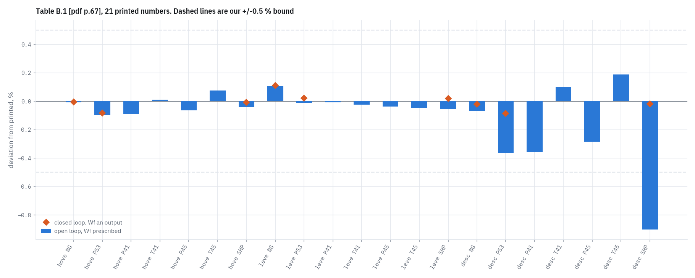
| Trim | Quantity | printed | ours | deviation % |
|---|---|---|---|---|
| hover | NG | 41,638.00 | 41,635.05 | -0.007 |
| hover | PS3 | 176.34 | 176.17 | -0.095 |
| hover | P41 | 174.28 | 174.13 | -0.087 |
| hover | T41 | 2,292.00 | 2,292.28 | +0.012 |
| hover | P45 | 37.42 | 37.40 | -0.065 |
| hover | T45 | 1,632.00 | 1,633.25 | +0.077 |
| hover | SHP | 911.10 | 910.73 | -0.040 |
| level 80 kt | NG | 39,768.00 | 39,809.57 | +0.105 |
| level 80 kt | PS3 | 142.13 | 142.12 | -0.009 |
| level 80 kt | P41 | 140.26 | 140.25 | -0.008 |
| level 80 kt | T41 | 2,102.00 | 2,101.50 | -0.024 |
| level 80 kt | P45 | 30.66 | 30.65 | -0.036 |
| level 80 kt | T45 | 1,501.00 | 1,500.28 | -0.048 |
| level 80 kt | SHP | 552.60 | 552.29 | -0.056 |
| descent 80 kt | NG | 38,072.00 | 38,045.46 | -0.070 |
| descent 80 kt | PS3 | 114.27 | 113.85 | -0.366 |
| descent 80 kt | P41 | 112.77 | 112.37 | -0.358 |
| descent 80 kt | T41 | 1,982.00 | 1,983.96 | +0.099 |
| descent 80 kt | P45 | 25.54 | 25.47 | -0.283 |
| descent 80 kt | T45 | 1,424.00 | 1,426.68 | +0.188 |
| descent 80 kt | SHP | 302.60 | 299.88 | -0.900 |
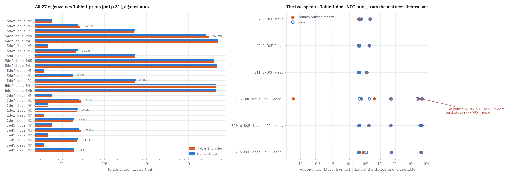
| Model | Trim | Mode | printed 1/s | ours 1/s | deviation % |
|---|---|---|---|---|---|
| 5-DOF | hover | NP | -0.565 | -0.5649 | +0.01 |
| 5-DOF | hover | NG | -2.66 | -2.376 | +10.69 |
| 5-DOF | hover | P3 | -51.6 | -52.39 | -1.54 |
| 5-DOF | hover | P45 | -3,060 | -2,604 | +14.91 |
| 5-DOF | hover | P41 | -4,900 | -4,870 | +0.61 |
| 5-DOF | level 80 kt | NP | -0.446 | -0.4461 | -0.01 |
| 5-DOF | level 80 kt | NG | -2.08 | -2.291 | -10.15 |
| 5-DOF | level 80 kt | P3 | -52.2 | -52.22 | -0.03 |
| 5-DOF | level 80 kt | P45 | -4,040 | -3,932 | +2.66 |
| 5-DOF | level 80 kt | P41 | -4,640 | -4,617 | +0.49 |
| 5-DOF | descent 80 kt | NP | -0.357 | -0.3566 | +0.12 |
| 5-DOF | descent 80 kt | NG | -1.75 | -1.808 | -3.34 |
| 5-DOF | descent 80 kt | P3 | -52.6 | -54.63 | -3.87 |
| 5-DOF | descent 80 kt | P41 | -4,430 | -4,513 | -1.86 |
| 5-DOF | descent 80 kt | P45 | -4,530 | -4,562 | -0.71 |
| 2-DOF | hover | NP | -0.565 | -0.5649 | +0.01 |
| 2-DOF | hover | NG | -2.69 | -2.539 | +5.62 |
| 2-DOF | level 80 kt | NP | -0.446 | -0.4461 | -0.01 |
| 2-DOF | level 80 kt | NG | -2.23 | -2.399 | -7.57 |
| 2-DOF | descent 80 kt | NP | -0.357 | -0.3566 | +0.12 |
| 2-DOF | descent 80 kt | NG | -1.82 | -1.897 | -4.21 |
| reduced-5 | hover | NP | -0.565 | -0.5649 | +0.01 |
| reduced-5 | hover | NG | -2.81 | -2.539 | +9.65 |
| reduced-5 | level 80 kt | NP | -0.446 | -0.4461 | -0.01 |
| reduced-5 | level 80 kt | NG | -2.16 | -2.399 | -11.05 |
| reduced-5 | descent 80 kt | NP | -0.357 | -0.3566 | +0.12 |
| reduced-5 | descent 80 kt | NG | -1.83 | -1.897 | -3.64 |
Row 6 of the 6‑DOF A differences terms of order
2×105 to produce order 103, so four printed significant figures
carry roughly ±50 there. As printed, B8 is open-loop unstable at
+3.07 /sec. That is precision lost in the printing, not a claim the report makes,
and it is why Appendix B’s 6‑DOF figures are compared element by element and
never by eigenvalue.
| Figure | Model | Trim | Ballin’s matrix, 1/s | ours, 1/s | |
|---|---|---|---|---|---|
| B7 | 3-DOF | hover | -0.378, -0.565, -2.229 | -0.4269, -0.5649, -2.073 | |
| B9 | 3-DOF | level 80 kt | -0.3535, -0.4461, -1.814 | -0.4001, -0.4461, -1.892 | |
| B11 | 3-DOF | descent 80 kt | -0.3567, -0.3577, -1.267 | -0.3566, -0.4113, -1.274 | |
| B8 | 6-DOF | hover | 3.067, -0.565, -4.132, -50.88, -3,062, -5,251 | -0.4299, -0.5649, -1.905, -49.84, -2,604, -5,286 | UNSTABLE as printed · ill-conditioned |
| B10 | 6-DOF | level 80 kt | -0.4461, -1.844, -1.844, -48.39, -4,038, -4,985 | -0.4026, -0.4461, -1.777, -49.79, -3,932, -5,016 | · ill-conditioned |
| B12 | 6-DOF | descent 80 kt | -0.3567, -0.7554, -0.7554, -50.47, -4,431, -4,875 | -0.3566, -0.4172, -1.185, -52.27, -4,566, -4,917 | · ill-conditioned |
The strongest test in the project, and the reason Appendix B matters: it validates the entire linearized model term by term against printed numbers, with no figure digitization, no read error and no eyeballing. A structural error in any component equation shows up as a wrong matrix element that points straight at the offending partial derivative.
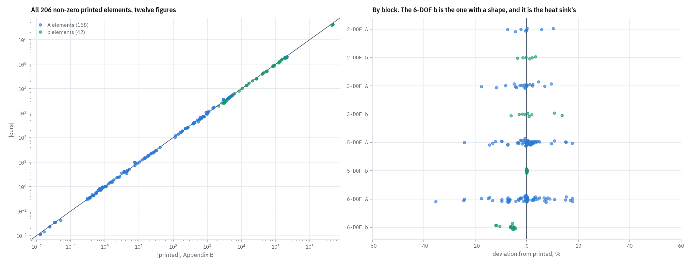
| Block | n | mean % | rms % | worst % |
|---|---|---|---|---|
| 2-DOF A | 9 | 0.16 | 4.93 | +10.27 |
| 2-DOF b | 6 | 0.18 | 2.33 | -3.62 |
| 3-DOF A | 21 | -1.53 | 6.03 | -17.62 |
| 3-DOF b | 9 | 1.79 | 6.28 | +13.65 |
| 5-DOF A | 54 | -0.15 | 6.91 | -24.29 |
| 5-DOF b | 12 | -0.03 | 0.09 | -0.23 |
| 6-DOF A | 74 | -1.02 | 8.97 | -35.41 |
| 6-DOF b | 15 | -6.66 | 7.11 | -12.07 |
The 5‑DOF b is exact to 0.2 % over twelve numbers. Turn the
station‑4.1 heat sink on and the same column drops to 0.937–0.956 on the
gas-path states and 0.879–0.894 on T4.1 — uniform, and monotone in power at
every entry. The heat sink is the only difference between the two models, so the
whole deficit is its, and it carries the same sign and a comparable size as the T4.1
row’s 7 % lead–lag deficit. Three blocks low by one ratio is evidence about two
unprinted time constants, not about the structure.
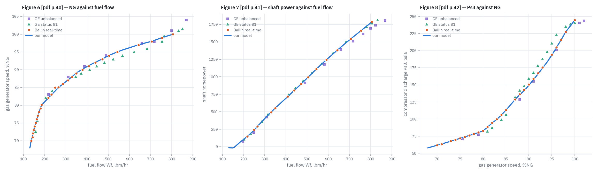
| Figure | Points scored | mean | rms | worst |
|---|---|---|---|---|
| Figure 6NG against fuel flow. Deviation in %NG points, not percent — an absolute difference on a speed already expressed as a percentage. | 29 of 29 | 0.000 | 0.234 | -1.006 %NG |
| Figure 7Shaft power against fuel flow. The low-power end is the worst, and it is the same end where Table B.1 and this figure disagree with each other by 5.5 %. | 15 of 15 | -0.137 | 0.606 | -1.745 % |
| Figure 8Ps3 against NG. No fuel flow appears in it, so it cannot be rescued by a compensating fuel-path error. | 26 of 27 | -0.317 | 0.425 | -0.940 % |
Table B.1 against Figure 7 differs by +5.49 / +1.32 / −0.14 % on shaft power at the three trims, growing as power falls. Table B.1 is primary — it is printed numbers carrying no digitizing error of ours, it underpins Appendix B, and Table 1’s modes come from the same trims. The practical consequence is a discipline: do not tune below the report’s own internal spread. At the descent condition that spread is 5.5 % on power and we sit 0.90 % from Table B.1. Chasing further is fitting to one of two sources that contradict each other.
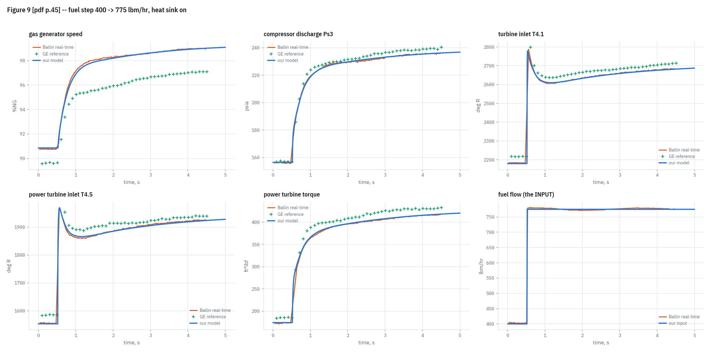
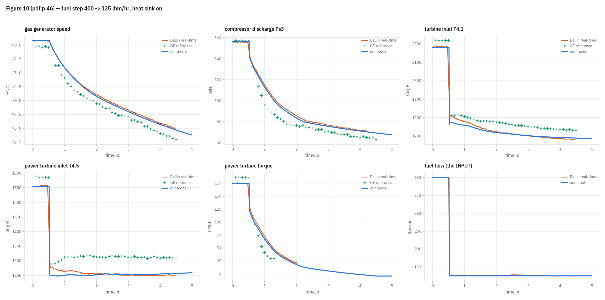
| Figure | Panel | Ballin | ours | deviation % | record ends |
|---|---|---|---|---|---|
| Fig 9 | PCNG | 98.98 | 98.96 | -0.014 | 4.471 s |
| Fig 9 | PS3 | 235.72 | 235.80 | +0.035 | 4.471 s |
| Fig 9 | T41 | 2,682.03 | 2,679.07 | -0.110 | 4.474 s |
| Fig 9 | T45 | 1,924.37 | 1,921.37 | -0.156 | 4.471 s |
| Fig 9 | TORQ45 | 415.98 | 416.79 | +0.196 | 4.471 s |
| Fig 10 | PCNG | 75.44 | 75.20 | -0.307 | 4.467 s |
| Fig 10 | PS3 | 70.83 | 70.40 | -0.595 | 4.465 s |
| Fig 10 | T41 | 1,684.02 | 1,690.92 | +0.410 | 4.471 s |
| Fig 10 | T45 | 1,250.60 | 1,255.84 | +0.419 | 4.468 s |
| Panel | rms % | against the 4 % ratchet |
|---|---|---|
| Fig 9 · torq45 | 0.673 | |
| Fig 9 · t41 | 0.706 | |
| Fig 9 · ps3 | 0.760 | |
| Fig 9 · t45 | 0.836 | |
| Fig 10 · pcng | 1.447 | |
| Fig 9 · pcng | 1.474 | |
| Fig 10 · ps3 | 1.698 | |
| Fig 10 · torq45 | 2.421 | |
| Fig 10 · t45 | 2.937 | |
| Fig 10 · t41 | 3.820 |
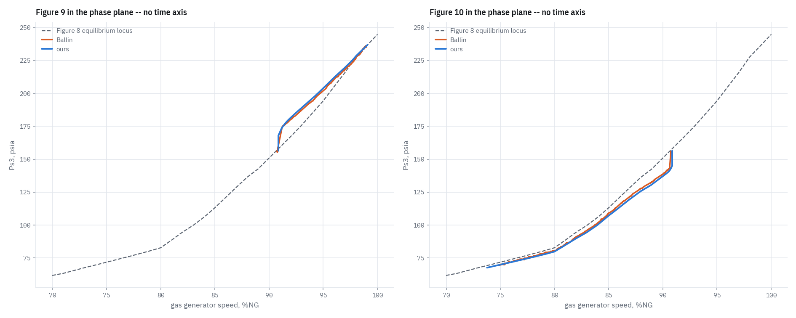
The report’s constraint was 10 ms per frame on 1988 hardware. The replication is not a real-time deliverable, but frame cost still governs how much validation can be run, and it had drifted. A profiling pass took the whole test suite from 214 to 31 seconds under two hard constraints: no new dependency, and no accuracy loss.
| Workload | before | after | factor |
|---|---|---|---|
| Held 400 lbm/hr trim | 205.8 µs/frame | 31.5 | 6.5× |
| Figure 9 acceleration | 236.4 | 37.4 | 6.3× |
| Figure 10 chop | 522.2 | 48.8 | 10.7× |
| Closed loop, engine + HMU + ECU | 515.0 | 95.5 | 5.4× |
| Trim solve | 5.77 ms | 1.40 | 4.1× |
| Full test suite | 214 s | 31 | 6.9× |
The profile was not where it was assumed to be. 66 % of frame time was in the function-table lookup — 75 % on the chop — and not in the iterations. A held trim converging both pressure loops in one pass each still cost 206 µs.
| Change | Effect | How accuracy was held |
|---|---|---|
| A scalar path for table lookup | 13.33 → 0.93 µs | Every call site asks for one abscissa and wraps the answer in
float(); the array round-trip for that cost 13.3 µs to do about
four flops. The scalar path reproduces NumPy’s interpolation rather than
approximating it — checked over 129,694 queries across all 32 shipped curves, at
every knot, every midpoint, 4000 random interior points each and outside both ends:
zero bit-mismatches. |
| Never materialize the blended compressor line | 18.81 → 2.65 µs | Blending two 56-point speed lines allocated two arrays per frame to serve one abscissa. The blend is now evaluated inside the bisection — six knots, not 112 — with the same element-wise arithmetic and so the same bits. The 56 points were never the cost; materializing them was. |
| Loop invariants out of the Gauss–Seidel sweep | ~1 → 0.05 µs on the roots | It recomputed two invariants every pass, though the report’s own “eleven arithmetic operations for each pass” says they are held. Hoisted with the printed expressions’ association preserved. |
Construction instead of dataclasses.replace |
6.6 µs/frame | All three control steps rewrite every field, so replace was
introspecting the field list each frame to rediscover that it was a
construction. |
| Eq. 80 solved exactly | 16.9 → 7.0 passes/frame | The one change that is not bit-identical, and it is bounded. Over the 801 fallback solves the published transients take, the exact root satisfies Eq. 80 to better than 10−12 relative and the bisection it replaced sat within 3.05×10−6. Only chop runs move at all; trims, all twelve Appendix B comparisons, Figure 9 and the entire closed loop are bit-identical. Within the chop, the worst movement in any channel is 0.00045 % — speed moves 0.0046 rpm in an 8188 rpm excursion. |
Figures 11–15 run the engine inside the Gen Hel UH‑60A blade-element helicopter simulation, which this report consumes and does not contain. They are out of scope by construction, not by omission — the rotor model is an external supplier to the report exactly as it is to us.
Table 3 looks like the best steady-state benchmark available — six hardware test cases with speeds, flows, pressures and temperatures — but its model column was produced with compressor and turbine functions from the NASA‑Lewis prototype engine, supplied in place of the standard ones and printed nowhere. Its own caption says it does not represent specification T700 performance. It is evidence of method, never pass/fail.
Two Gen Hel derivatives — the load-torque slope and the load inertia — are recovered from Appendix B itself rather than modelled, so the power turbine row of every linear comparison is supplied rather than predicted. The residual without them is the same −51.8 / −53.5 / −54.6 % in all four model variants to five figures, which is what a missing term in one equation should do.
Six open questions remain, and every one is a place where the report is silent and a choice was made, not a place where something is unexplained. Four are deliberate departures on record; two are ambiguities the source cannot settle, both with their cost measured.
Above 100 %NG nothing is claimed. That ceiling is Ballin’s, stated in his own validation section, and a replication inherits it.
Anything the report does not answer goes into a ledger rather than into the code as a guess. Of 64 questions logged over the project, these 6 remain open and 4 are partly closed. Every open one is a place where the report is silent and a choice was made, not a place where something is unexplained — four are deliberate departures on record, and two are ambiguities the source cannot settle, both with their cost measured.
None of them blocks a result. They are listed because a departure nobody can see is a departure that will be undone by accident, and because a reader deciding how much weight to put on a number in §6 should know which of these sits underneath it.
| Row | Verdict | Question | Where it stands |
|---|---|---|---|
| #31 | partly closed | Heat-sink time constants τ₁ and τ₂ | Not printed anywhere and trim-dependent by definition. Recovered from Appendix B, which fixes their ratio though neither survives its own print precision alone. Ours runs 7.3 % low, uniformly, in three independent blocks. |
| #43 | partly closed | Interpolation scheme for the function tables | The body calls them “function table lookups” and never says linear or spline, which changes every value between knots. Implemented as linear by decision. The mechanism is established; there is no cure in the source. |
| #47 | partly closed | Transient speed and the T4.1 spike | Was the largest open defect in the project. The causal chain is now closed and the residual sits at the reference figures’ own read error — the last number quoted against it turned out to be a comparison-window artefact of ours. |
| #54 | open | Hysteresis: whole band or half band? | Three control blocks carry backlash and each names a constant; none of the three figures says which convention. Taken as the total band. Bounded rather than guessed: the other reading moves the settled state at most 0.09 % on speed. |
| #55 | open | How the fuel control initializes | The report never says. A default is chosen and documented — every lag at its input, the lead–lag where its own derivative is zero. In closed loop the governor absorbs the choice; open loop it matters in full. |
| #56 | open | Which perturbation step the Jacobian should use | The report prints ±2 % of equilibrium, which is an amplitude matched to real helicopter excursions, not a step chosen to approximate a derivative. We use 10−5. Against Table 1 neither wins. |
| #59 | open | Integrator anti-windup | Figures C3, C7 and C10 all draw an unlimited 1/s followed by a separate saturation — a topology that winds up. We clamp the state, which does not. Invisible until a limit binds; 1240 rpm on NP when one does. |
| #60 | open | f1 on a beta grid, not the printed table | A deliberate departure. It removes a manufactured extrapolation entirely and halves the worst Table 1 speed mode, at a cost of 0.2018 → 0.2439 % on Table B.1’s rms. |
| #62 | open | f6 loaded as a constant | Figure A6 draws a curve with a visible slope. Measured, that slope is the page’s own skew — the thirteen glyphs sit on a horizontal line to well inside the ink width. Our reading, not the report’s. |
| #65 | partly closed | Appendix C constants nothing could observe | Nine control constants could be moved, some by a factor of ten, with the whole suite green — every steady test either solves for a free input or lets the governor trim the error away. All nine are now pinned; 25 of Table C.1’s 57 rows remain unobservable, most for reasons the report itself creates. |
#43, the interpolation scheme, sets what every function table returns between its printed knots — and the report states no scheme anywhere. It is the residual behind the spread in the linear-model comparison, and changing the scheme (as #60 did) redistributes that spread across trims rather than removing it. #56, the Jacobian step, changes the worst eigenvalue by up to 23 % depending on which question one thinks Appendix B's matrices answer. Neither can be settled from the source.